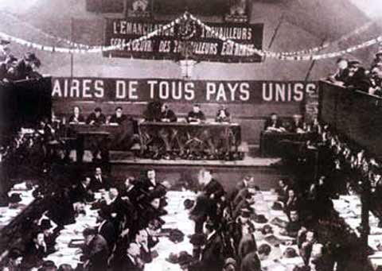

Giới thiệu đôi nét về Hồ Chí Minh
- Hồ Chí Minh sinh ngày 19/5/1890, mất ngày 2/9/1969, tên khai sinh là Nguyễn Sinh Cung.
- Hồ Chí Minh sinh ra trong một gia đình nhà Nho nghèo ở làng Sen (hay làng Kim Liên), xã Kim Liên, huyện Nam Đàn, tỉnh Nghệ An. Thân phụ là Nguyễn Sinh Sắc, thân mẫu là Hoàng Thị Loan. Ngoài ra Hồ Chí Minh còn có ba người anh chị em khác.
- Hồ Chí Minh là nhà cách mạng, người sáng lập Đảng Cộng sản Việt Nam, một trong những người đặt nền móng và lãnh đạo công cuộc đấu tranh giành độc lập, toàn vẹn lãnh thổ cho Việt Nam trong thế kỷ 20, một chiến sĩ cộng sản quốc tế.
- Hồ Chí Minh là người đã viết và đọc bản Tuyên ngôn Độc lập khai sinh nước Việt Nam Dân chủ Cộng hòa vào ngày 2/9/1945 tại quảng trường Ba Đình, Hà Nội. Người cũng là Chủ tịch nước Việt Nam Dân chủ Cộng hòa trong thời gian 1945 – 1969 và Chủ tịch Ban Chấp hành Trung ương Đảng Lao động Việt Nam trong thời gian 1951 – 1969.
- Trong quá trình cứu quốc, Hồ Chí Minh có tất cả 175 tên gọi với nhiều bí danh và bút danh. “Bác Hồ” là cái tên thân thương mà người dân Việt Nam thể hiện sự kính trọng và yêu mến đối với Người.
Hành trình đi tìm đường cứu nước 1911-1920
1911: Rời Việt Nam
Ngày 5 tháng 6 năm 1911, Nguyễn Tất Thành (tên của Chủ tịch Hồ Chí Minh lúc đó) rời bến cảng Nhà Rồng (Sài Gòn) trên con tàu Đô đốc Latouche-Tréville, bắt đầu hành trình tìm đường cứu nước.
Người lấy tên là Văn Ba, làm phụ bếp trên tàu để có cơ hội đi ra nước ngoài và tìm hiểu thế giới.
1911-1917: Hành trình qua nhiều quốc gia
Từ năm 1911 đến 1917, Nguyễn Tất Thành đã đi qua nhiều quốc gia và vùng lãnh thổ như Pháp, Mỹ, Anh, và một số nước châu Phi
Tại Mỹ (năm 1912), Người đã sống và làm việc ở thành phố New York, tìm hiểu về cuộc sống và chính trị của người dân Mỹ.
Tại Anh (năm 1913-1917), Người làm nhiều công việc như cào tuyết, đốt lò, và phụ bếp tại khách sạn. Trong thời gian này, Người tiếp tục học hỏi và nghiên cứu về các phong trào cách mạng trên thế giới.
1917-1920: Đến Pháp và tiếp cận với chủ nghĩa Marx-Lenin
Năm 1917, Nguyễn Tất Thành trở lại Pháp, nơi Người tích cực tham gia các hoạt động chính trị và xã hội.
Năm 1919, Người gửi bản Yêu sách của nhân dân An Nam (Revendications du peuple annamite) đến Hội nghị Versailles, đòi quyền tự do, dân chủ và bình đẳng cho nhân dân Việt Nam. Tuy nhiên, bản yêu sách không được chấp nhận.
Trong thời gian này, Người tiếp cận với các tư tưởng cách mạng, đặc biệt là chủ nghĩa Marx-Lenin, qua việc đọc các tác phẩm của Lenin và theo dõi Cách mạng Tháng Mười Nga (1917).
Năm 1920, Người tham gia Đại hội Đảng Xã hội Pháp tại Tours và bỏ phiếu ủng hộ việc gia nhập Quốc tế Cộng sản (Quốc tế III), trở thành một trong những người sáng lập Đảng Cộng sản Pháp.

Kết quả của hành trình (1911-1920)
Qua hành trình này, Chủ tịch Hồ Chí Minh đã nhận ra rằng con đường giải phóng dân tộc phải gắn liền với cuộc đấu tranh của giai cấp công nhân và nhân dân lao động trên toàn thế giới.
Người đã tìm thấy ánh sáng của chủ nghĩa Marx-Lenin và quyết định đi theo con đường cách mạng vô sản để giải phóng dân tộc Việt Nam khỏi ách thực dân.
Lãnh đạo cuộc kháng chiến chống thực dân Pháp (1945 - 1954)
1. Giai đoạn 1945 - 1946
- Sau Cách mạng tháng Tám năm 1945, Việt Nam Dân chủ Cộng hòa phải đối mặt với nạn đói, nạn mù chữ, sự chống phá của các thế lực ngoại xâm và nội phản,...
- Trong bối cảnh đó, Đảng và Chính phủ, đứng đầu là Chủ tịch Hồ Chí Minh, đã họp bàn tìm cách đưa cách mạng Việt Nam vượt qua nhiều khó khăn, thử thách.
- Trong việc giải quyết mối quan hệ Việt-Pháp (từ đầu tháng 3 đến trước ngày 19/12/1946), Chủ tịch Hồ Chí Minh và Ban Thường vụ Trung ương Đảng thực hiện chủ trương ”hòa để tiến”. Chủ tịch Hồ Chí Minh đã thay mặt Chính phủ Việt Nam Dân chủ Cộng hòa chủ động
ký kết Hiệp định sơ bộ ngày 6/3/1946, ký Tạm ước ngày 14/9/1946... với Chính phủ Pháp.
- Những hoạt động này của Chủ tịch Hồ Chí Minh trong giai đoạn này giúp cách mạng Việt Nam tránh phải đối đầu cùng lúc nhiều kẻ thù, đồng thời có thêm thời gian hòa bình để xây dựng chính quyền cách mạng và chuẩn bị lực lượng cho cuộc kháng chiến lâu dài với thực dân Pháp..
Kháng chiến chống Mỹ năm 1954-1969
- Năm 1960, Đại hội lần thứ III của Đảng, Người được bầu làm Chủ tịch Ban Chấp hành Trung ương Đảng và Người nêu ra hai nhiệm vụ chiến lược: "Xây dựng chủ nghĩa xã hội ở miền Bắc và đấu tranh hòa bình thống nhất nước nhà. Cả hai nhiệm vụ đều nhằm mục tiêu chung là củng cố hòa bình, thực hiện thống nhất nước nhà trên cơ sở độc lập và dân chủ. Người còn nêu rõ miền Bắc là hậu phương lớn, có vai trò quyết định đối với cách mạng cả nước, miền Nam có vai trò quyết định trực tiếp đối với hoàn thành cách mạng dân tộc dân chủ ở miền Nam. Để đưa miền Bắc tiến lên chủ nghĩa xã hội, là hậu phương lớn cho cuộc đấu tranh giải phóng miền Nam, Người nhấn mạnh trong Bài nói tại Hội nghị cán bộ công đoàn: "muốn xây dựng chủ nghĩa xã hội phải có người xã hội chủ nghĩa. Con người mới xã hội chủ nghĩa là những người có đạo đức và tri thức, là những người vừa "hồng" vừa "chuyên" và có ý thức làm chủ, xây dựng nước nhà. Người lãnh đạo nhân dân miền Bắc vừa sản xuất, vừa chiến đấu, đánh thắng chiến tranh phá hoại của giặc Mỹ, đồng thời ra sức hoàn thành nhiệm vụ chi viện cho cách mạng miền Nam. Người cũng luôn tin tưởng và khẳng định sự tất thắng của cách mạng miền Nam. Sau Hiệp định Giơnevơ, Người nêu rõ: "Để giành lấy thắng lợi, toàn thể nhân dân, quân đội và cán bộ ta từ Bắc đến Nam cần phải đoàn kết chặt chẽ, tư tưởng phải thống nhất, hành động phải nhất trí”. Người còn viết Thư gửi đồng bào cả nước vạch trần những âm mưu trong nước và thế giới về những hành động sai trái của đế quốc Mỹ, Người khẳng định: "Nước Việt Nam ta nhất định phải thống nhất. Đồng bào Nam và Bắc nhất định sẽ sum họp một nhà". Đây là một cuộc đấu tranh lâu dài và gian khổ, đòi hỏi toàn thể đồng bào phải quyết tâm kháng chiến.